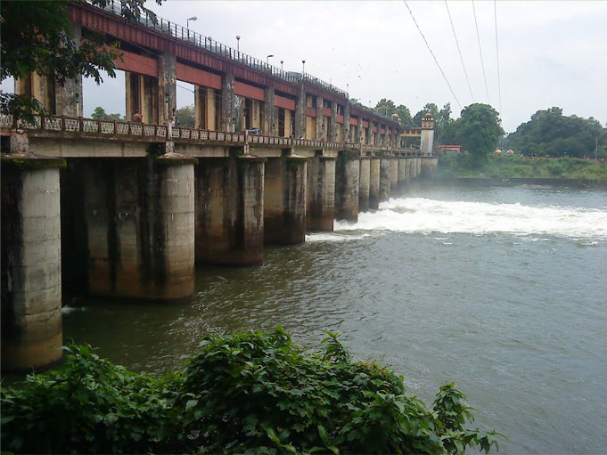

Famous destinations

Marine drive
Marine Drive is a buzzing waterfront district known for the Marine Walkway, popular for evening strolls, and leafy Subhash Bose Park. The modern Rainbow and Kettuvallam bridges offer backwater views, and cruises leave from jetties by the water. Affluent homes and offices fill the area, and shops along Broadway sell jewelry, spices, and local fabric

Bhoothathan kettu
Bhoothathankettu is a dam and tourist spot in Ernakulam district in Kerala, India. It is situated outside the village of Pindimana, about 10 km away from the town of Kothamangalam and 50 km away from the main city of Kochi..
Fort kochi
Fort Kochi beach is a beach along the Arabian Sea situated in Fort Kochi in the city of Kochi in South India, Kerala state.